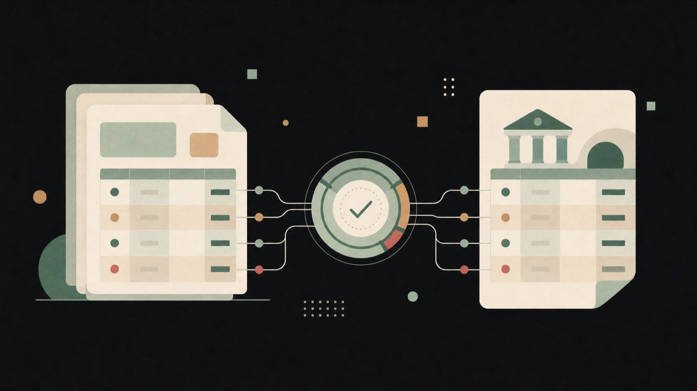
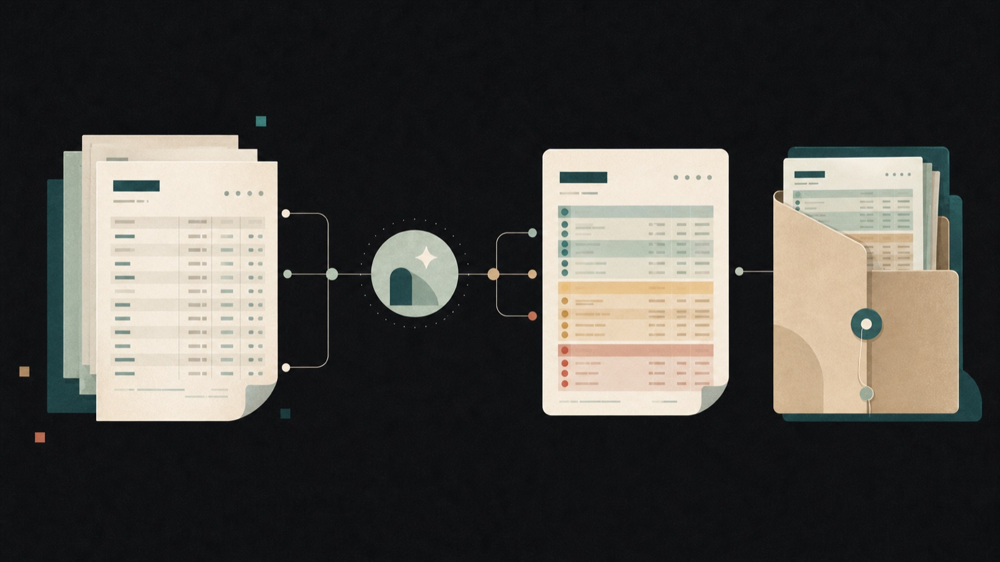

Parser nativi per i PDF
Legge direttamente i formati delle banche supportate, inclusi documenti multipagina e PDF protetti di Intesa Sanpaolo.
Mach.bank confronta partitari ed estratti conto, trova le corrispondenze e prepara report annotati pronti per il dossier. Tu controlli solo ciò che merita attenzione.
Demo con dati di esempio · nessun documento da caricare

Dall'estrazione dei movimenti al report finale, ogni passaggio è costruito per rendere chiaro cosa torna e cosa richiede una verifica.
Legge direttamente i formati delle banche supportate, inclusi documenti multipagina e PDF protetti di Intesa Sanpaolo.
Confronta importi e date con una tolleranza controllata, distinguendo subito corrispondenze esatte e approssimative.
Le voci non trovate non si perdono in una tabella: restano separate, ricercabili e pronte per il controllo.
I documenti originali tornano con evidenziazioni verdi, arancioni e rosse, leggibili anche fuori dall'applicazione.
Il parsing avviene nel browser: i documenti contabili restano sul dispositivo durante tutta la riconciliazione.
Partitari ed estratti conto di un intero trimestre possono essere elaborati insieme e scaricati in un unico ZIP.
Il flusso segue il modo in cui lavora già lo studio: documenti in ingresso, controllo delle eccezioni, report archiviabile.
Trascina partitari ed estratti conto nelle due aree dedicate. La banca viene riconosciuta automaticamente.
Match esatti, approssimativi e movimenti non trovati sono separati e ordinati per una verifica immediata.
Scarica i PDF annotati e il riepilogo in un unico pacchetto, pronto per il dossier o per il cliente.
La dashboard mostra subito il volume elaborato e distribuisce i movimenti nei tre livelli di attenzione. Da lì puoi filtrare, cercare e aprire ogni coppia.
| Data banca | Descrizione | Importo | Data partitario | Contropartita |
|---|---|---|---|---|
| 13/04/26 | Incasso tramite P.O.S. | +253,35 | 13/04/26 | Accrediti POS |
| 14/04/26 | Bonifico ordinante | +1.840,00 | 14/04/26 | Incasso cliente |
| 15/04/26 | Oneri e commissioni | −39,00 | 15/04/26 | Oneri bancari |
| 16/04/26 | Pagamento fornitore | −628,40 | 16/04/26 | Debiti v/fornitori |
Partitari ed estratti conto vengono letti nel browser. L'elaborazione non richiede l'invio dei PDF a un servizio esterno.
Ogni movimento viene riportato sui PDF originali con un codice colore coerente. Il risultato è leggibile dal collega, dal cliente e in fase di revisione.

Mach.bank concentra in un solo flusso l'estrazione, il confronto e la preparazione dei documenti finali.
I parser seguono i formati PDF specifici degli istituti supportati, senza richiedere conversioni o fogli intermedi.
Italia · National
Alto Adige · BPAAIT
Veneto · BCC
Italia · National
Italia · National
Non trovi la tua banca? Scrivi a contact@netawebstest.com con un campione anonimizzato: valuteremo il formato.
La demo usa esclusivamente dati sintetici e mostra risultati, filtri e storico senza chiederti documenti reali.